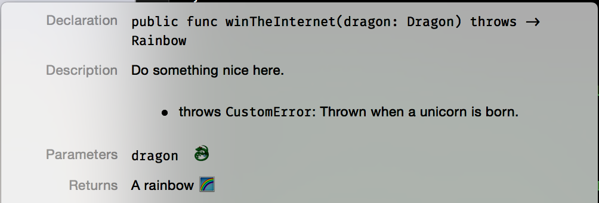

Swift 2.0 - throws tip
Quick Swift 2.0 throws tip:
There’s been a lot of «heated» debates regarding the throws approach added to Swift 2.0 in favor of Either<T,U>.
Some examples:
@cocoaphony Throws types were explicitly but hand-wavily pooh-poohed in the What's New in Swift talk :/
— Tom Brow (@browgrammer) June 13, 2015Swift exceptions compose poorly. You can’t determine concrete ErrorType from a closure that throws, and can’t throw/catch asynchronously.
— Justin Spahr-Summers (@jspahrsummers) June 9, 2015That being said, I’m not going to convince you to use it or avoid it. That’s entirely up to you, the app / framework you are working on and wether or not you need to do async calls with throws (which is a «fun» thing to accomplish).
If you end up using the throws approach though there’s a big issue along the lines of «What is this function supposed to throw at me?»
And while this tip won’t «solve» the issue at compile time is sure a nice way to «notify» the consumers of your API somehow.
My approach so far was to add the following to the header of the apple doc of my functions:
|
|
This will turn into something like this:

Take away
As you can see this is not a «perfect» solution but is at least a great way of providing documentation for your callers as part of your internal documentation.
Happy documentation! 😉